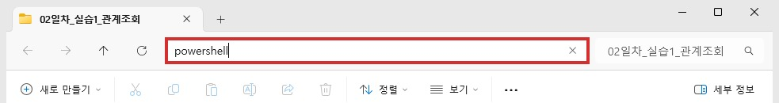
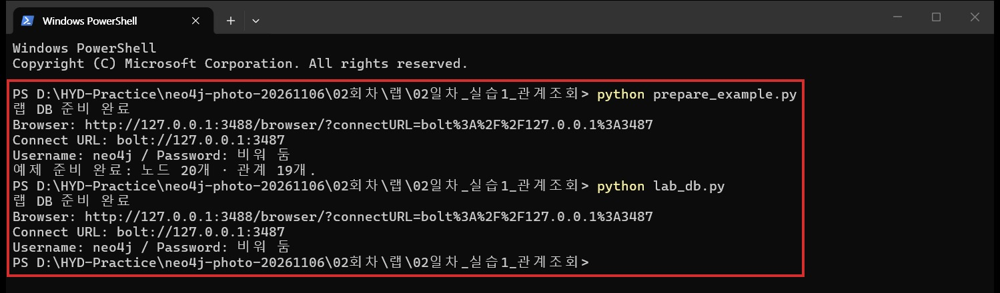

HYD · 실습 가이드Cypher로 그래프를 생성·조회·수정·삭제하고 설비 관계 탐색하기
이론에서 화면으로 읽기만 한 Cypher 쿼리를 Neo4j Browser에서 직접 돌립니다. 예제 DB에 연결해 노드와 관계를 만들고, 고치고, 지웁니다. 그다음 처음부터 들어 있던 설비 데이터에서 관계를 한 단계, 두 단계 건너 필요한 값을 꺼내고, 꺼낸 답이 맞는지 원래 행과 맞춰 봅니다. 줄기 단계 가운데 온톨로지 단계입니다.
영상에서 말하는 「안내 문서 2번」이 이 문서의 02절입니다. 절 안의 쿼리 칸은 위에서부터 차례로 씁니다.
01 예제 준비하고 연결하기
먼저 Docker Desktop을 실행합니다. 이 실습의 데이터베이스가 Docker에서 돌아갑니다.
명령과 쿼리는 손으로 치지 말고 칸 아래의 복사 단추로 붙여 넣으세요. 따옴표 하나만 빠져도 돌지 않습니다. 이 문서의 쿼리는 같은 차례로 실습 폴더의 기본문법_연습.cypher에도 들어 있습니다.
클래스룸의 02회차 실습 자료에서 받은 ZIP의 압축을 풀고, 풀린 02회차/랩/02일차_실습1_관계조회 폴더를 파일 탐색기로 엽니다. 주소 표시줄에 powershell을 입력하고 Enter를 누르면 그 폴더에서 PowerShell 창이 열립니다.

실습 폴더를 연 파일 탐색기의 주소 표시줄에 powershell을 넣은 모습. Enter를 누르면 이 폴더에서 PowerShell이 열립니다 · 누르면 크게 보기다음 명령 두 개를 차례로 실행하세요.
PowerShell · 이 실습 폴더
python prepare_example.py
예제 준비 완료: 노드 20개 · 관계 19개가 표시됩니다.
PowerShell · 이 실습 폴더
python lab_db.py
랩 DB 준비 완료와 Connect URL 주소가 표시되고, 브라우저에 Neo4j Browser의 연결 창이 열립니다.

두 명령의 출력. 첫 명령의 끝줄에 예제 준비 완료: 노드 20개 · 관계 19개, 두 번째 명령에 Connect URL이 나옵니다. 포트 번호는 PC마다 다릅니다 · 누르면 크게 보기Neo4j Browser는 쿼리를 넣고 결과를 그래프나 표로 보는 화면입니다. 연결 창의 Connection URL과 Database user는 이미 채워져 있습니다. 주소 끝의 숫자는 컴퓨터마다 다르고, PowerShell에 Connect URL이라고 찍힌 주소의 숫자와 같으면 됩니다. Password는 비워 둔 채 Connect를 누르세요.
연결되면 가운데에 새 기능을 알리는 안내 창(Work in tabs)이 뜹니다. Dismiss로 닫습니다.
맨 위에 방금 연결한 주소가 나옵니다. 옆의 Database 자리에 적힌 neo4j는 DB에 처음부터 붙어 있는 이름이고, 포털 쪽 DB도 이름이 같습니다. 그래서 이름이 아니라 주소로 가립니다. 주소 끝 숫자가 PowerShell의 그 숫자면 방금 명령으로 띄운 예제 DB에 붙은 것입니다. 포털의 지식 지도가 담긴 포털 기준 DB는 주소가 다른 DB라서, 여기서 무엇을 만들고 지워도 포털의 지식은 달라지지 않습니다. 아래 넓은 칸의 글은 처음 열면 나오는 시작 안내라 그냥 둡니다.
이 DB에 무엇이 들어 있는지 봅니다. 왼쪽 맨 위의 원통 모양 단추를 누르세요. 노드 수 아래 색깔 단추들이 레이블(노드마다 붙어 있는 클래스 이름)이고, 설비가 Asset, 구성 요소가 Component처럼 영어로 붙어 있습니다. 그 아래 단추들은 관계 유형의 이름, 맨 아래 단추들은 속성의 이름입니다.
Nodes (20), Relationships (19)가 나옵니다. 설비 한 대에 관한 데이터입니다.
패널은 Stream이라고 적힌 곳 바로 왼쪽의 단추로 접어 둡니다. 결과가 나올 자리가 넓어집니다.
02 노드 만들기: CREATE
노드 두 개를 만듭니다. 아래 칸의 복사를 누르고 Neo4j Browser 위쪽 입력칸에 붙여 넣으세요.
Neo4j Browser 입력 칸
CREATE (a:연습장치 {id:'basic-A', name:'연습 펌프', score:40}),
(b:연습장치 {id:'basic-B', name:'연습 팬', score:70});
CREATE는 뒤에 적은 모양대로 새로 만드는 절입니다. 둥근 괄호 하나가 노드 하나이고, 그 안의 중괄호가 노드의 속성입니다(쌍점 왼쪽이 속성 이름, 오른쪽이 값). 중괄호 앞 쌍점 뒤의 낱말은 이 노드에 붙이는 레이블입니다. 처음부터 들어 있던 설비 데이터에는 없는 이름으로 붙였으므로, 나중에 우리가 만든 노드만 골라 찾고 지울 수 있습니다.
입력칸 오른쪽 끝의 Run을 한 번만 누르세요. CREATE는 같은 것이 이미 있는지 보지 않아서, 또 돌리면 똑같은 노드가 둘 더 생깁니다.
결과에 Created 2 nodes로 시작하는 글이 나옵니다. 돌려 달라는 RETURN을 적지 않아 그림은 없습니다.
03 찾아서 돌려받기: MATCH · RETURN
만든 노드가 들어갔는지 찾습니다. MATCH는 맞는 것을 찾는 절이고, RETURN은 돌려 달라는 절입니다. 괄호 안 쌍점 앞의 글자는 찾아질 노드를 부르는 변수입니다.
Neo4j Browser 입력 칸
MATCH (n:연습장치)
RETURN n;
돌릴 때는 늘 입력칸 오른쪽 끝의 Run을 누르세요. 아래 결과마다 붙어 있는 Run은 그 쿼리를 한 번 더 돌리는 단추라, 잘못 누르면 앞의 CREATE가 또 돌아갑니다.
원 둘(연습 펌프 · 연습 팬)이 그려집니다. 둘을 이은 적이 없어 선은 없습니다.
원 안에는 이름만 보입니다. 원 연습 펌프를 누르면 오른쪽 칸에 그 노드에 적힌 것이 다 나옵니다. 맨 위 색깔 이름표가 레이블이고 아래 표가 속성입니다.
속성 표에 id basic-A, name 연습 펌프, score 40이 있습니다. 표 맨 윗줄의 뾰족한 괄호로 싸인 줄은 Neo4j가 노드마다 매기는 번호라 쿼리에 적은 id와 다른 것입니다.
결과 왼쪽의 Table을 누르면 같은 결과가 표로 바뀌고, Graph를 누르면 그림으로 돌아옵니다. 옆의 Raw는 쓰지 않습니다.
표에서는 노드 하나가 한 행이고, 그 안에 레이블과 속성이 한 덩어리로 들어 있습니다.
속성 값 몇 개만 필요하면 노드를 통째로 받지 않습니다. 변수에 점을 찍고 속성 이름을 붙이면 그 속성 값만 받습니다. AS 뒤에 적은 낱말이 결과 표의 열 이름이 되고, ORDER BY는 늘어놓는 차례를 정합니다.
Neo4j Browser 입력 칸
MATCH (n:연습장치)
RETURN n.name AS 이름, n.score AS 점수
ORDER BY 점수;
표만 나옵니다. 열 이름은 이름 · 점수이고 연습 펌프 40, 연습 팬 70 차례입니다. 그림은 노드나 관계를 돌려받았을 때만 나옵니다.
04 조건 더하기: WHERE
찾은 것 가운데 일부만 받을 때는 WHERE로 조건을 더합니다. >=는 크거나 같다는 뜻이라, 점수가 50 이상인 노드만 찾습니다.
Neo4j Browser 입력 칸
MATCH (n:연습장치)
WHERE n.score >= 50
RETURN n;
원 하나(연습 팬)만 나옵니다. 연습 펌프는 점수가 40이라 이번 결과에서 빠졌을 뿐이고 DB에는 남아 있습니다.
05 있으면 찾고 없으면 만들기: MERGE · SET, 관계 잇기
펌프에 센서를 하나 답니다. 센서 노드를 먼저 만들고, 그다음에 펌프와 관계로 잇습니다. MERGE는 적은 패턴이 있으면 찾고, 없을 때만 만듭니다. 괄호 안에는 이 센서 하나만 가리키는 값(식별자)인 id만 적고, 이름과 단위는 속성에 값을 적어 넣는 절인 SET 줄에 따로 적었습니다. MERGE는 괄호 안에 적은 것이 전부 같아야 이미 있는 노드로 보기 때문입니다.
Neo4j Browser 입력 칸
MERGE (s:연습센서 {id:'basic-S1'})
SET s.name = '연습 온도 센서', s.unit = '℃'
RETURN s;
원 하나(연습 온도 센서)가 나오고, 결과 아래 글에 노드 하나를 만들었다는 말이 있습니다. 없던 센서라 새로 만든 것입니다.
다음 칸은 방금 것과 글자 하나 다르지 않은 쿼리입니다. 한 번 더 돌립니다.
Neo4j Browser 입력 칸
MERGE (s:연습센서 {id:'basic-S1'})
SET s.name = '연습 온도 센서', s.unit = '℃'
RETURN s;
원은 여전히 하나이고, 아래 글이 Set 2 properties로 시작하며 만들었다는 말이 없습니다. 이미 있는 노드를 찾기만 했고, SET이 같은 값을 한 번 더 적었습니다.
이제 펌프에서 센서로 감시된다는 관계를 긋습니다. 위 두 줄의 MATCH가 펌프와 센서를 id로 하나씩 찾고, 셋째 줄이 그 둘을 화살표로 잇습니다. 화살표 가운데 대괄호 안에서 쌍점 뒤가 관계 유형의 이름입니다.
Neo4j Browser 입력 칸
MATCH (p:연습장치 {id:'basic-A'})
MATCH (s:연습센서 {id:'basic-S1'})
MERGE (p)-[r:감시된다]->(s)
RETURN p, r, s;
원 둘 사이에 펌프에서 센서로 가는 화살표가 하나 생기고, 선 위에 감시된다가 적혀 있습니다. 원이 그림 끝에 걸려 잘리면 그림 오른쪽 아래의 화면 맞춤 단추(Zoom to fit)를 누릅니다.
06 속성 고치기: SET
센서 이름을 연습 유온 센서로 고칩니다. 첫 줄이 펌프에서 감시된다 관계를 건너 센서까지 가는 패턴을 찾고, SET 줄이 그 센서의 이름을 새로 적습니다.
Neo4j Browser 입력 칸
MATCH (p:연습장치 {id:'basic-A'})-[r:감시된다]->(s:연습센서 {id:'basic-S1'})
SET s.name = '연습 유온 센서'
RETURN p, r, s;
센서 원의 글이 연습 유온 센서로 바뀌고, 펌프와 이어진 선은 남아 있습니다.
센서 원을 눌러 오른쪽 칸의 속성 표를 봅니다.
id basic-S1과 unit ℃는 처음 적은 값이고 name만 달라졌습니다. SET은 적어 준 속성만 바꿉니다.
07 지우고 다시 찾기: DETACH DELETE · DELETE
만든 것을 지웁니다. 지우는 쿼리에는 되돌리는 단추가 없으므로, 맨 위 주소의 끝 숫자가 PowerShell의 Connect URL 숫자인지 한 번 더 보고 시작합니다.
펌프부터 지웁니다. 펌프에는 센서로 가는 관계가 붙어 있고, 관계가 붙은 노드는 DELETE만으로는 DB가 받지 않고 오류를 냅니다. DETACH DELETE는 그 노드에 붙은 관계를 떼어 함께 지웁니다.
Neo4j Browser 입력 칸
MATCH (p:연습장치 {id:'basic-A'})
DETACH DELETE p;
Deleted 1 node, deleted 1 relationship이 나옵니다.
이 글은 몇 개를 지웠는지만 알려 주고 지금 무엇이 남았는지는 보여 주지 않으므로, 지운 뒤에는 다시 찾아봅니다. 레이블 사이의 세로줄은 「또는」이라는 뜻입니다.
Neo4j Browser 입력 칸
MATCH (n:연습장치|연습센서)
RETURN n;
원 둘(연습 팬 · 연습 유온 센서)만 남고 선은 없습니다.
남은 둘은 붙은 관계가 없어 DELETE만으로 지워집니다. 설비 데이터는 레이블이 달라 이 쿼리에 걸리지 않습니다.
Neo4j Browser 입력 칸
MATCH (n:연습장치|연습센서)
DELETE n;
Deleted 2 nodes가 나옵니다.
이번에는 count로 세어 봅니다. count는 찾은 노드를 돌려주는 대신 몇 개인지 숫자 하나로 세어 줍니다.
Neo4j Browser 입력 칸
MATCH (n:연습장치|연습센서)
RETURN count(n) AS 남은수;
표 한 칸에 남은수 0이 나옵니다. 우리가 만든 것은 하나도 남지 않았습니다.
08 설비 데이터를 레이블마다 세기
이제 처음부터 들어 있던 설비 데이터를 봅니다. 포털 기준 DB에 담긴 설비 지식에서 설비 한 대 몫만 옮겨 담은 예제입니다. 지우고 난 뒤에도 처음과 같은지부터 셉니다. RETURN에 labels(n)과 count(n)을 나란히 적으면, 레이블이 같은 것끼리 묶어서 묶음마다 셉니다. DESC는 큰 수부터 늘어놓으라는 뜻입니다.
Neo4j Browser 입력 칸
MATCH (n)
RETURN labels(n) AS 레이블, count(n) AS 개수
ORDER BY 개수 DESC;
표 다섯 행: Component 6, Sensor 5, StateVariable 5, Part 3, Asset 1. 다 더하면 20으로, 처음에 왼쪽 패널에서 본 노드 수와 같습니다.
레이블 열의 값은 대괄호와 따옴표에 싸여 있습니다. 노드 하나에 레이블을 여럿 붙일 수 있어서 목록 꼴로 돌려주는 것이라 안의 낱말만 보면 됩니다. StateVariable은 센서가 재는 값을 따로 둔 노드이고, 이 실습의 쿼리에서는 쓰지 않습니다.
09 관계를 한 번 건너기: 한 단계
이 설비가 어떤 구성 요소를 가졌는지 묻습니다. 설비 코드로 설비 한 대를 가리키고, 가진다는 관계 HAS_COMPONENT를 건너서, 그 끝에 있는 구성 요소의 이름을 돌려받습니다. 설비 괄호와 관계의 대괄호는 쌍점 앞이 비어 있습니다. 뒤에서 다시 부를 일이 없으면 변수는 붙이지 않아도 됩니다.
Neo4j Browser 입력 칸
MATCH (:Asset {code:'HYD-01'})-[:HAS_COMPONENT]->(c:Component)
RETURN c.name AS 구성요소;
표 여섯 행: 작동유 탱크, 구동 모터, 예비 펌프 (B), 주 펌프 (A), 쿨러 팬, 오일 쿨러. 관계를 한 번 건너서 받은 답이고, 이렇게 한 번 건너는 조회를 한 단계라고 합니다.
10 관계를 두 번 건너기: 경로
한 번 더 건너 구성 요소가 쓰는 부품까지 갑니다. 쓴다는 관계 USES_PART를 건너 부품(Part)에 닿습니다. 노드와 관계가 줄줄이 이어진 길을 경로라고 합니다. 패턴 맨 앞에 변수를 적고 등호를 붙이면 그 변수가 경로 전체를 가리키므로, RETURN에 그 변수를 적어 길 위의 노드와 관계를 한꺼번에 돌려받습니다.
Neo4j Browser 입력 칸
MATCH path = (:Asset {code:'HYD-01'})-[:HAS_COMPONENT]->(:Component)-[:USES_PART]->(:Part)
RETURN path;
설비 하나에서 구성 요소 셋으로, 거기서 부품 셋으로 이어진 그림이 나옵니다(노드 7개 · 관계 6개). 관계를 두 번 건넜으니 두 단계입니다. 구성 요소는 여섯인데 셋만 나온 것은, MATCH가 패턴 전체에 맞는 것만 찾아서 부품까지 이어진 구성 요소만 나왔기 때문입니다.
같은 패턴에 WHERE로 오일 쿨러라는 조건을 더하고, RETURN에서 부품의 이름과 품번을 고릅니다.
Neo4j Browser 입력 칸
MATCH (:Asset {code:'HYD-01'})-[:HAS_COMPONENT]->(c:Component)-[:USES_PART]->(p:Part)
WHERE c.name = '오일 쿨러'
RETURN c.name AS 구성요소, p.name AS 부품, p.partNo AS 품번;
표 한 행: 구성요소 오일 쿨러, 부품 쿨러 코어, 품번 P-CLR-CORE.
11 답이 맞는지 맞춰 보기: 원래 행 · 조건 · 집계
쿼리는 조건을 잘못 적거나 엉뚱한 것을 세어도 오류를 내지 않고 그럴듯한 표를 내놓습니다. 그래서 나온 표가 물으려던 것에 맞는 답인지 맞춰 봅니다. 먼저 센서 쪽 길을 조건 없이 받습니다. MONITORED_BY는 앞에서 한글로 적어 본 감시된다의 영어 이름이고, 가상은 실제로 달린 센서인지 계산으로 낸 값인지를 적어 둔 속성입니다.
Neo4j Browser 입력 칸
MATCH (:Asset {code:'HYD-01'})-[:HAS_COMPONENT]->(c:Component)-[:MONITORED_BY]->(s:Sensor)
RETURN c.name AS 구성요소, s.name AS 센서, s.virtual AS 가상
ORDER BY 구성요소, 센서;
표 다섯 행: 오일 쿨러 · 냉각 효율 (가상) · true / 오일 쿨러 · 유온 센서 · false / 주 펌프 (A) · 유량 센서 · false / 주 펌프 (A) · 토출 압력 센서 · false / 쿨러 팬 · 팬 진동 센서 · false. 조건을 걸거나 세기 전에 받은 이 다섯 행이 원래 행입니다.
다음 칸을 돌리기 전에 이 표에서 답을 먼저 정해 둡니다. 가상이 false인 것만 받으면 첫 행 하나가 빠지고 아래 네 행이 남아야 합니다. 다음 칸은 같은 쿼리에 WHERE 한 줄을 더한 것입니다.
Neo4j Browser 입력 칸
MATCH (:Asset {code:'HYD-01'})-[:HAS_COMPONENT]->(c:Component)-[:MONITORED_BY]->(s:Sensor)
WHERE s.virtual = false
RETURN c.name AS 구성요소, s.name AS 센서, s.virtual AS 가상
ORDER BY 구성요소, 센서;
표 네 행이 나오고 가상 열이 모두 false입니다. 오일 쿨러는 유온 센서 한 행만 남았습니다. 미리 정해 둔 답과 같으므로 빠져야 할 것만 빠졌습니다.
이번에는 조건 없이 다섯 행을 다 놓고, 구성 요소마다 센서가 몇 개 달렸는지 셉니다. count는 묶음마다 몇 개인지 숫자 하나로 줄이고, collect는 그 묶음에 든 센서 이름을 한 줄에 늘어놓습니다. 이렇게 세거나 더해서 낸 결과를 집계라고 합니다.
Neo4j Browser 입력 칸
MATCH (:Asset {code:'HYD-01'})-[:HAS_COMPONENT]->(c:Component)-[:MONITORED_BY]->(s:Sensor)
RETURN c.name AS 구성요소, count(s) AS 센서수, collect(s.name) AS 센서목록
ORDER BY 센서수 DESC, 구성요소;
표 세 행: 오일 쿨러 2 [냉각 효율 (가상), 유온 센서], 주 펌프 (A) 2 [유량 센서, 토출 압력 센서], 쿨러 팬 1 [팬 진동 센서]. 센서수는 원래 행에서 센 수(둘 · 둘 · 하나)와 같고, 목록에 든 이름의 수가 왼쪽 숫자와 맞습니다.
집계는 여러 행을 숫자 하나로 줄여서, 숫자만 보면 무엇을 셌는지 알 수 없습니다. 이 표에서 두 가지를 짚어 봅니다.
오일 쿨러의 2에는 계산값인 냉각 효율 (가상)이 들어 있습니다. 실제로 달린 센서 수를 알고 싶었다면 하나 많은 수입니다. 그리고 구성 요소는 여섯인데 표에는 셋뿐입니다. 센서가 없는 셋(작동유 탱크 · 구동 모터 · 예비 펌프 (B))은 패턴에 맞지 않아, 센서 0개라는 행도 없이 표에서 빠졌습니다.